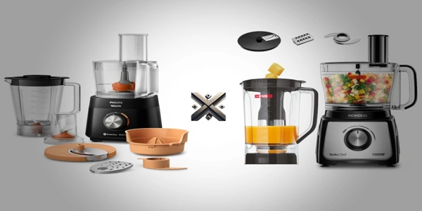

Se você quer mais agilidade na cozinha, o processador de alimentos é um dos aparelhos que mais ajuda. Ele fatiar, tritura, mistura e ainda economiza tempo. Mas entre tantos modelos disponíveis, dois se destacam entre os mais buscados: o Philips Walita e o Mondial Turbo Chef 5 em 1.
Ambos são multifuncionais, mas têm propostas diferentes. Neste comparativo, você vai entender o que cada um entrega de verdade: desde potência e acessórios até preço e facilidade de uso.

O processador de alimentos é aquele tipo de eletrodoméstico que rapidamente se torna indispensável na cozinha. Com uma proposta multifuncional, ele é capaz de realizar diversas tarefas como picar, triturar, ralar, fatiar, moer e até misturar ingredientes, tudo com muita praticidade e agilidade.
Enquanto o liquidificador é mais eficiente no preparo de receitas líquidas, o processador de alimentos se sobressai ao lidar com ingredientes sólidos ou densos, oferecendo cortes precisos e mantendo a textura original dos alimentos. Isso o torna ideal para receitas que exigem mais preparo ou etapas de corte.
Os modelos variam bastante: há opções compactas para o uso básico do dia a dia, e versões mais completas, com acessórios que expandem suas funções — como batedeira, espremedor e ralador. Essa versatilidade faz dele um grande aliado para quem gosta de cozinhar, mas não quer perder tempo com tarefas repetitivas.
No fim das contas, o processador de alimentos é um verdadeiro facilitador na rotina culinária. Ele ajuda a economizar tempo, mantém a organização e ainda dá um toque profissional ao preparo das refeições.
A potência é o que define até onde o processador consegue ir. Quanto mais forte o motor, mais variedade de alimentos ele lida sem travar.
Resumo: se você cozinha em grande volume ou usa ingredientes mais densos, o Mondial é mais adequado. Para quem quer agilidade no básico do dia a dia, o Philips atende muito bem.
Nem só de potência vive um processador. As funções extras e os acessórios são o que fazem a diferença na rotina da cozinha.
Resumo: quer um aparelho mais completo e versátil? O Philips ganha nesse ponto. Se você não usa tantas funções e prefere algo mais direto ao ponto, o Mondial resolve.
Outro ponto que pesa é o espaço. Dependendo do tamanho da sua bancada ou da sua rotina, a capacidade do processador pode ajudar – ou atrapalhar.
Resumo: mora com mais gente ou cozinha em volume? O Mondial oferece mais espaço. Se a prioridade é economia de espaço e agilidade, o Philips sai na frente.
Embora estejam na categoria dos processadores acessíveis, há uma diferença considerável entre os dois. O Philips Walita gira em torno dos R$ 399, enquanto o Mondial Turbo Chef 5 em 1 se destaca pelo preço mais em conta, saindo por cerca de R$ 289. Claro, esses valores podem oscilar conforme a loja e as promoções do momento.
Resumo: a decisão ideal vai depender do que você prioriza: se busca mais potência e maior capacidade, o modelo da Mondial é o mais indicado; já se prefere recursos adicionais e maior versatilidade, a Philips se destaca.
Um aparelho prático faz diferença quando você está no meio de uma receita e não tem tempo a perder.
Resumo: os dois são fáceis de usar e seguros. O Philips é mais didático; o Mondial foca na força e na segurança mecânica.
Um processador de alimentos serve para adiantar sua vida na cozinha. Com ele, você pode:
Ele substitui boa parte do trabalho manual com mais precisão e menos bagunça.
Usar um processador é simples, mas vale seguir algumas dicas:
Os dois modelos estão disponíveis em diversos sites e redes físicas. Ao comprar, sempre confira:
Dica: pesquise em sites comparadores e acompanhe períodos de liquidação.
| Especificação | Philips Walita | Mondial Turbo Chef |
|---|---|---|
| Potência | 1000W | 1000W |
| Funções | Mais de 25 | 5 funções principais |
| Capacidade da tigela | 2L de capacidade útil | 2L úteis / 3,2L de capacidade total |
| Liquidificador | 1,5L | 3L |
| Faixa de preço | R$ 399 | R$ 289 |
O Philips Walita chama atenção pela combinação de praticidade e multifuncionalidade, sendo uma ótima escolha para quem procura um aliado versátil na rotina da cozinha. Por outro lado, o Mondial Turbo Chef aposta na potência e na grande capacidade, ideal para quem prepara receitas em maior volume e precisa de desempenho robusto.
Escolha o que mais combina com sua rotina. E lembre-se: o melhor processador de alimentos é aquele que realmente facilita sua vida.